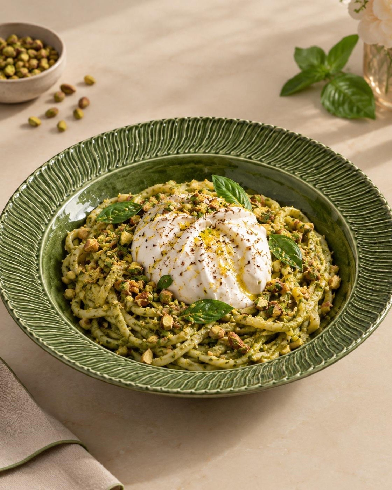
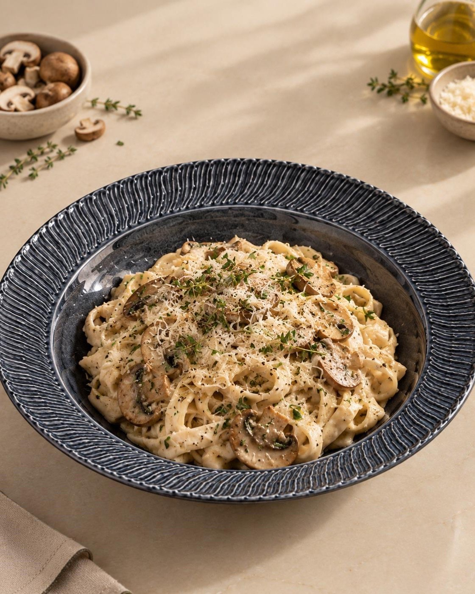
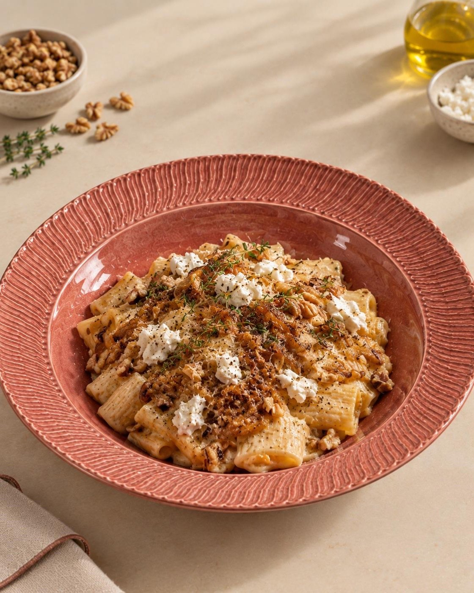
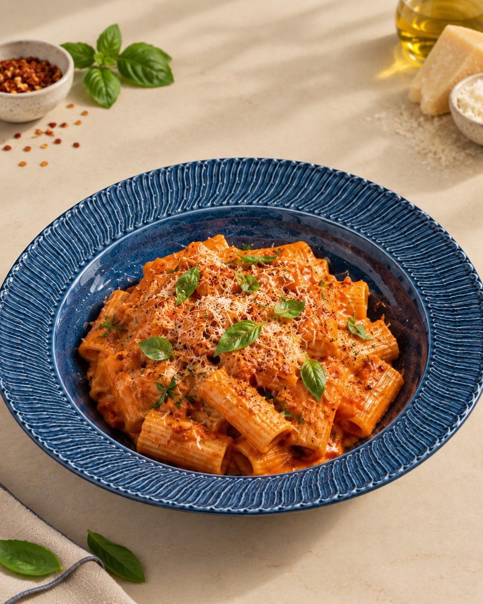

Four sauces, each at a different point on the plate: one fresh and green, one earthy, one sweet and tangy, one with heat. Every one of them finishes the same way, tossed with the pasta in the pan.

Pistachio Pesto & Burrata

Truffle Mushroom Parmesan

Caramelised Onion & Goat Cheese

Spicy Tomato Vodka
Sauce
Profile
Look
Best with
Pistachio Pesto & Burrata
Creamy, nutty, fresh, subtly citrusy
Vibrant green pesto with creamy white burrata
Spaghetti, linguine, toasted sourdough, crisp white wine
Truffle Mushroom Parmesan
Rich, earthy, creamy, deeply savoury
Golden-brown mushrooms over silky Parmesan-coated pasta
Vibrant red-orange glossy sauce with fresh green basil
Rigatoni, garlic bread, Parmesan, fresh basil
Before you begin
Salt the water generously and cook the pasta only to al dente. It keeps cooking for the minute it spends in the sauce.
Reserve about a quarter cup of the cooking water before you drain. Every sauce here uses it at the end, a little at a time, to turn glossy and cling to the pasta.
Composed by
Aarti Sharma
Co-founder, Virtuoso Catering House
virtuoso
Catering House
Recipe 1 of 4Pasta sauces
Pistachio Pesto & Burrata
Creamy, nutty, fresh, subtly citrusy.
Look
Vibrant green pesto with creamy white burrata
Texture
Silky pasta with a slightly textured pesto and soft, creamy burrata
Best with
Spaghetti, linguine, toasted sourdough, crisp white wine
Ingredients
200 g spaghetti or linguine
80 g unsalted pistachios
1 cup fresh basil leaves
1 garlic clove
40 g Parmesan
80 ml extra-virgin olive oil
1 tbsp lemon juice
½ tsp lemon zest
Salt
Black pepper
125 g burrata
Method
Cook the pastaBring a large pot of generously salted water to a boil. Cook the spaghetti or linguine until al dente according to the package instructions. Reserve approximately ¼ cup of pasta water before draining.
Prepare the pistachio pestoAdd the pistachios, basil, garlic, Parmesan, lemon juice and lemon zest to a food processor. Pulse until combined but still slightly textured. Slowly add the olive oil and blend until the pesto becomes creamy and emulsified. Season with salt and freshly cracked black pepper.
Toss the pastaTransfer the cooked pasta to a pan and add the pistachio pesto. Toss gently over low heat, adding a little reserved pasta water at a time until the pesto coats the pasta evenly and becomes glossy.
Plate and add the burrataTransfer the pasta to a serving plate and place the burrata in the centre. Gently tear open the burrata just before serving so the creamy centre spreads over the pasta.
GarnishFinish with crushed pistachios, Parmesan shavings, fresh basil, freshly cracked black pepper and a light drizzle of extra-virgin olive oil. Add a little lemon zest for a final touch of freshness.
Garnish
Crushed pistachios, Parmesan shavings, fresh basil leaves, freshly cracked black pepper, extra-virgin olive oil and lemon zest.
Chef’s note
Do not over-blend the pistachios. A slightly textured pesto gives the dish more depth and creates a beautiful contrast with the silky pasta and creamy burrata.
virtuoso
Catering House
Recipe 2 of 4Pasta sauces
Truffle Mushroom Parmesan
Rich, earthy, creamy, deeply savoury.
Look
Golden-brown mushrooms over silky Parmesan-coated pasta
Texture
Velvety, creamy and slightly meaty from the mushrooms
Cook the pastaBring a large pot of generously salted water to a boil. Cook the fettuccine or tagliatelle until al dente. Reserve ¼ cup of pasta water before draining.
Sauté the mushroomsClean and slice the mushrooms evenly. Heat the olive oil and 1 tbsp butter in a wide pan over medium-high heat. Add the mushrooms and sauté until deeply golden and their moisture has cooked away.
Build the sauceAdd the finely chopped garlic and fresh thyme. Sauté for 30–45 seconds until fragrant. Lower the heat and add the remaining 1 tbsp butter and the cream. Allow the mixture to simmer gently for 1–2 minutes.
Add the ParmesanAdd the finely grated Parmesan and stir until completely melted into the cream. Gradually add the reserved pasta water until the sauce becomes smooth, silky and glossy.
Toss the pastaAdd the cooked pasta directly into the pan. Toss thoroughly so the sauce coats every strand of pasta. Season with salt and freshly cracked black pepper.
Finish with truffleTurn off the heat and add 1–2 tsp truffle oil, depending on your preferred intensity. Toss gently once more.
Garnish and serveFinish with Parmesan shavings, fresh parsley or microgreens, a little fresh thyme and freshly cracked black pepper.
Garnish
Parmesan shavings, fresh parsley or microgreens, fresh thyme, freshly cracked black pepper and a few drops of truffle oil.
Chef’s note
Add the truffle oil only after removing the pan from the heat. This preserves its delicate aroma and prevents the truffle flavour from becoming overpowering.
virtuoso
Catering House
Recipe 3 of 4Pasta sauces
Caramelised Onion & Goat Cheese
Sweet, tangy, creamy, deeply savoury.
Look
Golden caramelised onions with a creamy, pale sauce
Texture
Silky and creamy with a delicate crunch from toasted walnuts
Cook the pastaBring a large pot of generously salted water to a boil. Cook the rigatoni or orecchiette until al dente. Reserve ¼ cup of pasta water before draining.
Caramelise the onionsThinly slice the onions. Heat the butter and olive oil in a wide pan over low-medium heat. Add the onions and a pinch of salt. Cook slowly for approximately 20–25 minutes, stirring occasionally, until the onions become soft, deeply golden and caramelised.
Balance the onionsAdd the brown sugar and balsamic vinegar. Stir well and cook for another 1–2 minutes. The balsamic adds acidity while the sugar enhances the natural sweetness of the caramelised onions.
Create the creamy sauceAdd the cream and soft goat cheese to the pan. Stir gently until the goat cheese melts and creates a smooth, creamy sauce. Add the Parmesan and fresh thyme.
Toss the pastaAdd the cooked pasta to the sauce and toss thoroughly. Gradually add the reserved pasta water until the sauce becomes silky and coats the pasta evenly. Season with salt and freshly cracked black pepper.
Toast the walnutsToast the walnuts in a dry pan over medium heat for a few minutes until fragrant. Roughly chop them before serving.
Garnish and servePlate the pasta and finish with toasted walnuts, crumbled goat cheese, fresh thyme, Parmesan shavings and freshly cracked black pepper.
Garnish
Toasted walnuts, crumbled goat cheese, fresh thyme, Parmesan shavings and freshly cracked black pepper.
Chef’s note
The onions are the heart of this dish. Cook them slowly and patiently. Deep caramelisation creates the rich sweetness that balances the tanginess of the goat cheese.
virtuoso
Catering House
Recipe 4 of 4Pasta sauces
Spicy Tomato Vodka
Rich, creamy, spicy, tangy and savoury.
Look
Vibrant red-orange glossy sauce with fresh green basil
Texture
Silky, creamy and perfectly coating
Best with
Rigatoni, garlic bread, Parmesan, fresh basil
Ingredients
200 g rigatoni
2 tbsp extra-virgin olive oil
3 garlic cloves
1 shallot
1–2 tsp chilli flakes
250 g tomato passata
50 ml vodka
100 ml cream
40 g Parmesan
1 tsp butter
Salt
Black pepper
1 cup fresh basil leaves
Method
Cook the pastaBring a large pot of generously salted water to a boil. Cook the rigatoni until al dente. Reserve approximately ¼ cup of pasta water before draining.
Build the flavour baseHeat the olive oil in a wide pan over medium heat. Finely chop the shallot and garlic. Sauté the shallot until soft and translucent, then add the garlic and chilli flakes and cook for 30–45 seconds until fragrant. Be careful not to brown the garlic.
Add the tomatoPour in the tomato passata and simmer for 5–7 minutes, stirring occasionally, until the sauce has reduced slightly and developed a deeper flavour.
Add the vodkaPour in the vodka and simmer for another 2–3 minutes. This lets the alcohol cook off while the vodka enhances the flavour and texture of the tomato sauce.
Make it creamyReduce the heat and add the cream. Stir until the sauce becomes smooth and creamy. Add the Parmesan and butter and stir until completely incorporated.
Toss the pastaAdd the cooked rigatoni directly into the sauce. Toss vigorously over low heat, adding a little reserved pasta water as needed. The sauce should cling to the ridges of the rigatoni rather than pool at the bottom of the plate. Season with salt and freshly cracked black pepper.
Finish with basilTear the fresh basil leaves and fold some through the pasta. Plate immediately and finish with fresh basil, Parmesan shavings, chilli flakes and a drizzle of extra-virgin olive oil.
Garnish
Fresh basil leaves, Parmesan shavings, chilli flakes, freshly cracked black pepper and extra-virgin olive oil.
Chef’s note
The final toss is crucial. Let the rigatoni finish in the sauce so the pasta absorbs the flavour, and the starch from the pasta water creates that signature glossy, restaurant-style finish.